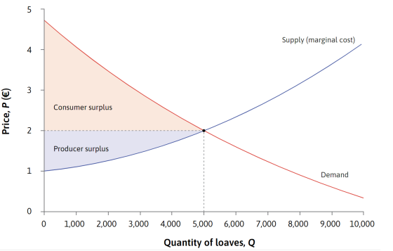
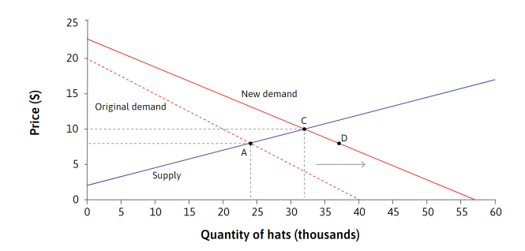
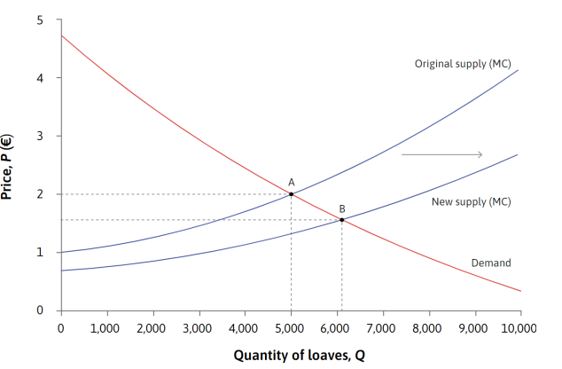

§4 Gain from Trade
Gains from trade terjadi saat pembeli dan penjual bertransaksi secara sukarela, menciptakan surplus. Surplus konsumen adalah area di bawah kurva permintaan dan di atas harga pasar, karena membayar lebih murah dari WTP. Surplus produsen adalah area di atas kurva biaya marginal dan di bawah harga pasar, karena menerima harga lebih tinggi dari WTA. Pada titik keseimbangan, total surplus menjadi maksimal. Namun, jika produksi tidak pada titik keseimbangan, total surplus akan berkurang karena ada surplus yang tidak dimanfaatkan atau kerugian dari produksi tambahan.
Pasar kompetitif bisa mencapai pareto efisien jika tidak ada dampak eksternal dan semua kontrak lengkap, artinya tidak ada alokasi lain yang bisa membuat seseorang lebih baik tanpa merugikan orang lain. Namun, dalam praktiknya banyak kondisi ini tidak terpenuhi, karena ada eksternalitas, kontrak tidak lengkap, dan ketidaksempurnaan pasar. Selain efisiensi, penting juga melihat keadilan distribusi surplus antara konsumen dan produsen. Distribusi ini dipengaruhi oleh elastisitas: jika permintaan lebih inelastis daripada penawaran, konsumen mendapat surplus lebih besar, karena mereka kurang responsif terhadap perubahan harga.
§5 Perubahan pada Supply dan Demand
Ketika permintaan terhadap suatu barang meningkat, kurva permintaan bergeser ke kanan. Pergeseran ini disebut sebagai exogenous shock karena perubahan terjadi dari luar sistem ekonomi yang sedang dianalisis, misal karena perubahan selera atau pendapatan konsumen. Awalnya terjadi excess demand pada harga lama, yang mendorong penjual menaikkan harga dan meningkatkan kuantitas yang ditawarkan. Akhirnya, pasar mencapai keseimbangan baru dengan harga lebih tinggi dan jumlah barang yang terjual lebih banyak.
Ketika permintaan meningkat, beberapa penjual melihat peluang untuk menaikkan harga karena banyak pembeli tetap ingin membeli meski stok habis, sehingga mereka menjadi price-maker. Dengan menaikkan harga, mereka memperoleh economic rent sementara dan mendorong produksi tambahan hingga tercapai keseimbangan baru. Saat pasar tidak seimbang, penjual dan pembeli bisa bertransaksi di harga berbeda untuk meraih keuntungan ekstra sebelum pasar kembali stabil.
Ketika produktivitas meningkat, kurva penawaran bergeser ke kanan. Pergeseran ini disebut sebagai exogenous shock karena perubahan berasal dari inovasi teknologi, bukan dari perubahan harga itu sendiri. Awalnya terjadi excess supply pada harga lama, yang mendorong penjual menurunkan harga untuk menjual lebih banyak barang. Akhirnya, pasar mencapai keseimbangan baru dengan harga lebih rendah dan jumlah barang yang terjual lebih banyak.
 « Back